w 回転２
ツールバー/アイコン:

 メニュー: M 修正 > w 回転２
ショートカット: R, 2
コマンド: rotate2 | r2
メニュー: M 修正 > w 回転２
ショートカット: R, 2
コマンド: rotate2 | r2
説明:
エンティティを回転させて反回転させます。
このツールはエンティティ自体のオリジナルの向きを維持したまま中心のまわりにエンティティを回転して配置させるのに有用です。
手順:
- 回転させて反回転させたいエンティティを選択します。
- このツールを始めてください。
- マウスで主要な回転のための中心を設定するか、あるいはコマンドラインの中で座標を入力してください。
- 個々のオブジェクトの回転の中心をセットします。
この第2の回旋点は最初の中心のまわりのエンティティと一緒に回転します。
- 回転角および反回転角を入力することができるところで、回転2ダイアログが表示されます。
オリジナルのエンティティを削除するためには、「オリジナルを削除」にチェック、それらをコピーするためには「オリジナルを維持」にチェックします。
さらに、「多重コピー」を選ぶことによりコピーの所定の数を作成することができます。
新しいエンティティはオリジナルと同じ画層に置かれ、同じ属性があります。
現在の画層および現在の属性を代わりに使用するためには、「現在の画層および属性を使用」をチェックしてください。
- エンティティを回転させるのに「OK」をクリックします。
